Solicitudes atendidas
—
CADI · Redes y Comunicación
Visualiza el estado de la red, envía solicitudes al balanceador y consulta estadísticas en tiempo real a través de la API.
Solicitudes atendidas
—
Servidores configurados
—
Servidores activos
—
| Nombre | Puerto | URL | Estado |
|---|---|---|---|
| Cargando servidores… | |||
Envía una petición al balanceador (GET /solicitar). El sistema
reparte la carga entre servidores activos.

EstadísticasTotal: 0 solicitudes
Los resultados, errores y avisos de conexión aparecerán aquí.